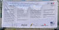
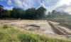
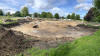
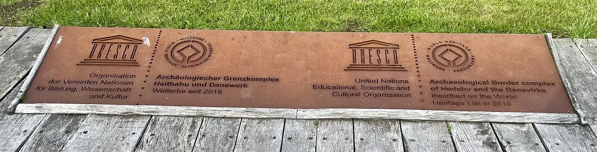
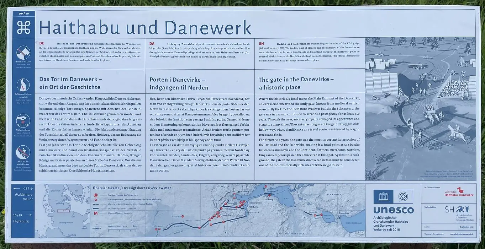
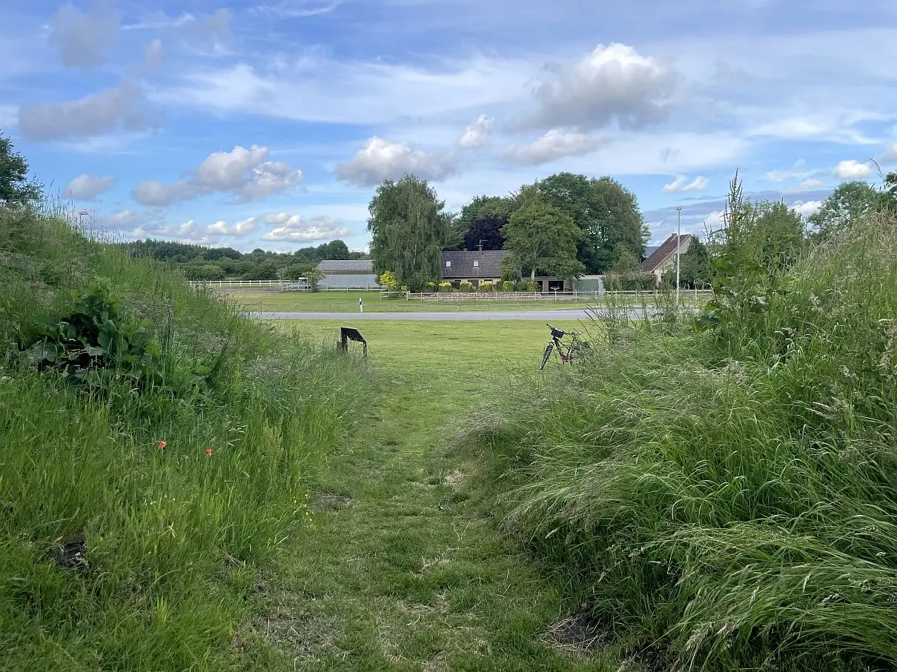
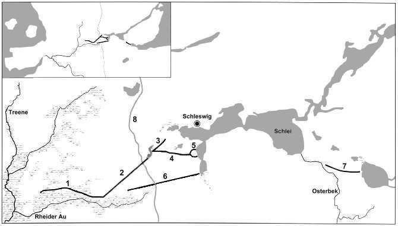
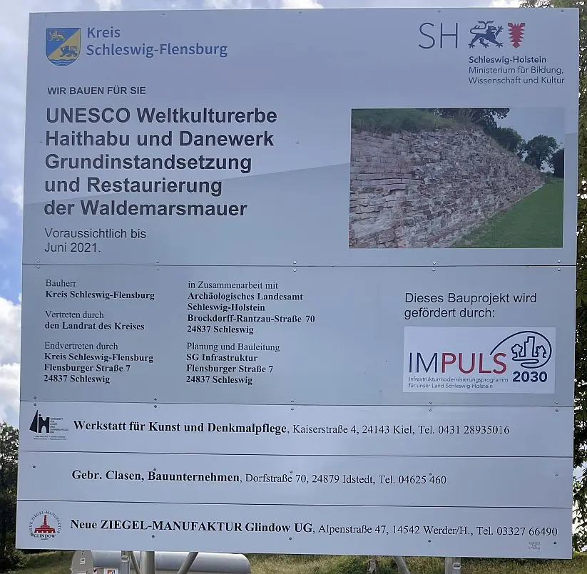
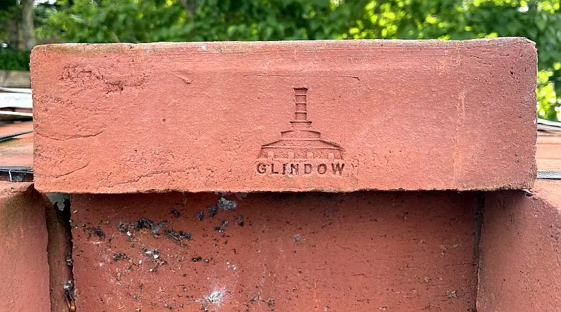
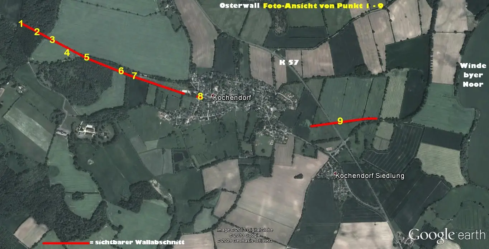

2 - Danewerk - Letztes Update 10.10.2024
Der nachfolgende Linkhinweis innerhalb der Webseite "KuLaDig - Kultur. Landschaft. Digital" bringt einen ausführlichen Überblick zu der Siedlung Haithabu und den einzelnen Wallabschnitten des Danewerks mit Text-, Bild- und Kartenmaterial.
Christian Weltecke, Birte Anspach, Matthias Maluck: Archäologischer Grenzkomplex Haithabu und Danewerk (UNESCO Welterbestätte). In: KuLaDig, Kultur.Landschaft.Digital. URL: https://www.kuladig.de/Objektansicht/KLD-271183 (Abgerufen: 10. Oktober 2024)
Über die Webseite des Danevirke Museums kann man sich über die Geschichte des Danewerks / die verschiedenen Abschnitte anschaulich und ausführlich informieren.
Für das Danevirke Museum wird aktuell ein neues Gebäude mit einer neuen Ausstellung und umfassend neuen Außenanlagen erstellt, das in 2026 fertiggestellt sein soll.
Auf der Webseite Welterbe Haithabu-Danewerk heißt es: "Hier informieren wir Sie über die wikingerzeitliche Siedlung Haithabu und den Grenzwall Danewerk. Außerdem erfahren Sie Wissenswertes rund um das Thema UNESCO Welterbe..." Man findet hier zahlreiche digitale Anwendungen / Unterseiten usw. - einen kleinen Ausschnitt daraus stelle ich hier einmal vor:
#vikingwalks - Auf beeindruckende Weise begeben sich die Besucher und Besucherinnen digital auf einen Spaziergang durch das Welterbe
360°-Rundgang - Einige Orte des Welterbes und Ausstellungsräume der Museen werden für Sie digital erlebbar
#grabungsblog - Verfolgen Sie die aktuellen archäologischen Untersuchungen am Danewerk mit!
Digitale Ausstellung - Vergangenheit trifft Gegenwart Leben am Welterbe - die Geschichten der Menschen hautnah!
Abschnitte und Orte - Entdecken Sie im Folgenden die unterschiedlichen Abschnitte und Orte des UNESCO-Welterbe Haithabu und Danewerk.
UNESCO-Welterbe Archäologischer Grenzkomplex Haithabu und Danewerk - Webseite der Deutsche UNESCO-Kommission
Hinweis auf einige Videos auf YouTube:
Imagefilm Welterbe Haithabu und Danewerk über YouTube - 1:35 Minuten
Der archäologische Grenzkomplex Haithabu und Danewerk - 7:21 Minuten
Danewerk - Ausbau des Archäologischen Parks - zeigt die Visualisierung zum angedachten Ausbau des Archäologischen Parks im Umfeld des neuen Danevirke Museum
Das Danewerk 2020 - 1:30 Minuten - Drohnenflug - das Danewerk von oben
Ein zweisprachiger (D/DK) Video mit dem Titel "Grænzenlos - Mauern, Wälle, Weltkulturerbe" (27:37 Minuten - vom 11.11.2023 - verfügbar bis 11.11.2028) des Deutsch Dänischen Online-Magazins des NDR erkundet Danewerk und Haithabu. Das Danewerk trennte einst Jütland an seiner schmalsten Stelle und dadurch die Stämme des Nordens von denen des Südens. Simone Mischke (NDR) und Anders Køpke Christensen (TV SYD) erfahren, wie aus einer alten Grenze ein Ort der Begegnung geworden ist.
Die Wikipedia Seite zum Stichwort Danewerk ist sehr gut unterrichtet und ausführlich. Gleiches gilt für die österreichische Webseite Austria-Forum.org und deren Beitrag zum Danewerk.
Die Ausgrabungen am Danewerk wurden ab dem 02.09.2024 wieder fortgesetzt. In einem Beitrag vom 13.09.2024 auf der Webseite Archäologie Online mit dem Titel "Ausgrabungen am Danewerk" wird darüber berichtet. Die Ausgrabungen im Vorfeld der geplanten Besucherlenkung für den Archäologischen Park Danewerk wurden vom Archäologischen Landesamt Schleswig-Holstein und dem Museum Sønderjylland durchgeführt. Informationen dazu finden sich auch hier.
Im Haddeby-Kurier, Ausgabe 5/2023, findet sich auf der S. 8 ein bebildeter Bericht zu einer Ausgrabung im Ort Dannewerk. Dort heißt es u.a.: "...Bei Ausgrabungen am Container-Besucherzentrum des Danevirke Museums in der Hauptstraße hat ein Team des Archäologischen Landesamts (ALSH) Reste von zwei Gebäuden aus dem Mittelalter freigelegt. Sowohl die Bauart der Häuser als auch Keramikfunde zeigen, dass diese Gebäude im 12. oder 13. Jahrhundert errichtet wurden. Sie stammen damit aus der Epoche vor rund 800 bis 850 Jahren, in der am Danewerk die gigantische Backsteinmauer des dänischen Königs Waldemar I. errichtet und von seinen Nachfolgern genutzt wurde."
Weiterführende Informationen dazu finden sich auf der Webseite des Webseite des Danevirke Museums unter Ausgrabung 2023. Insbesonders die dort eingestellten und mit erklärendem Text versehenen Luftfotos machen den Sachverhalt sehr verständlich.
Im Zusammenhang mit dem Neubau des Danewerk Museums der Anfang 2023 angegangen und bis Mitte 2026 vollendet sein soll, wurden August 2021 Vorgrabungen / Suchschnitte durch das Archäologische Landesamt S-H im nahen Umfeld des alten Museums durchgeführt. Nach dem Abriss - auch die angekaufte, benachbarte Gaststätte "Rothenkrug" wurde dem Erdboden gleich gemacht - wird auch noch der Baugrund archäologisch untersucht.
Bei meinem letzten Besuch vor Ort - Sonntag, 19.06.2022 - konnte ich diese Fotos machen.



Ein Artikel vom 26.08.2022 in Archäologie Online mit dem Titel "Historischer Ochsenweg am Danewerk wieder aufgetaucht" berichtet über eine Ausgrabung (ab 02.05.2022 - 9/2022) unter der ehemaligen Gaststätte "Rothenkrug" und der Entdeckung von Spuren des Ochsenweges. Zu diesen Ausgrabungen kann man auch Infos in dem Archäologie Blog nachlesen.
Die bedeutenden archäologischen Stätten in Haithabu und Danewerk sind 2018 zum Unesco-Weltkulturerbe ernannt worden. Das Welterbekomitee nahm die deutsche Bewerbung am Samstag, 30.06.2018, bei der Sitzung in Bahrain an. Die Stätte sei ein einzigartiges Zeugnis der Wikingerzeit und ihrer kulturellen Traditionen, hieß es zur Begründung. Die darüber neu erstellte Webseite vermittelt alles rund um das Thema.

Dort kann auch die 52-seitige Broschüre zum 5-jährigen abgerufen werden, in der der Weg zum Unesco-Weltkulturerbe aufgezeigt wird. Darin wird auch der Managementplan bis 2030 vorgestellt, Infos zu neuen Beschilderung usw. enthalten.
Ein informatives Faltblatt mit dem Titel "Welterbe Haithabu-Danewerk" als pdf-Datei ist auch online verfügbar.
Die letzten Ausgrabungen am Danewerk fanden in verschiedenen Kampagnen in den Jahren 2009 bis 2013 auf dem Areal des ehemaligen Café Truberg in der Gemeinde Dannewerk statt. Dabei wurden von den Ausgräbern außergewöhnliche Befunde angetroffen. So wurde das in den fränkischen Reichsannalen als: "...nur von einem einzigen Tor unterbrochen, durch das Wagen und Reiter heraus und wieder herein kommen könnten..." beschriebenre Tor, der etwa 6 m breite Durchlass, das sogenannte "Wiglesdor", lokalisiert werden. Dazu passt auch dieser Artikel "Das Danewerk - älter als gedacht" vom 04.10.2013 der Webseite Archäologie Online.
An der Stelle findet sich inzwischen diese dreisprachige Infotafel, die ich am Sonntag, 19.06.2022, fotografiert habe. Außerdem noch den darunter befindlichen Blick durch das Wiglesdor.


Außerdem wurden vier bis fünf Bauphasen des Danewerks freigelegt, wodurch abgeleitet werden kann, dass das erste Danewerk deutlich früher als bislang angenommen angelegt wurde, nämlich bereits im 5. Jh. n. Chr.
Wie es hier bei den Ausgrabungen 2013 aussah habe ich damals mit dieser Fotoreihe vom 19.08.2013 eingefangen - siehe auch auf dieser Seite unten.
Das Danewerk ist ein System von Wällen, das etwa zwischen 800 und 1200 errichtet wurde und das zur Verteidigung der dänischen Südgrenze diente. Der fjordartige Einschnitt der Schlei und die unwegsamen westlichen Flussniederungen von Treene und Rheider Au waren ausschlaggebend für die Lage des Danewerks. Hier liegt eine schmale Landverbindung, der damals einzig mögliche Einfallsweg zum dänischen Reich und hier verlief auch der Heerweg / Ochsenweg. Wurde dieser Landstrich abgeriegelt, dann gab es kein Durchkommen, denn die damaligen geographischen Verhältnisse verhinderten ansonsten ein Umgehen der Sperranlage.
Das Danewerk besteht aus einer Reihe von Einzelwällen, die eine Gesamtlänge von fast 26 km aufweisen und stellt das größte archäologische Denkmal Nordeuropas dar. Die wesentlichen Abschnitte des Danewerks bilden der Krummwall, der Hauptwall, der Nordwall, der Verbindungs- oder Margarethenwall, der Halbkreiswall von Haithabu, der Kograben und der Osterwall.

1) Der Krummwall - 2) Der Hauptwall - 3) Der Nordwall - 4) Der Verbindungswall - 5) Der Halbkreiswall -
6) Der Kograben - 7) Der Osterwall - 8) Der Heerweg
Im Westen liegt der 4,5 km lange Krummwall im Niederungsbereich der Rheider Au. An der Schanze XIX erfolgt der Übergang vom Hauptwall in den Krummwall (siehe Luftbild 1). Er wird als Flankenstellung angesehen, der einer Umgehung der Hauptstellung entgegenwirken sollte. Er stellt kein einheitliches Bauwerk dar, sondern erscheint streckenweise als einfacher Erdwall ohne Frontpalisade oder als Damm, der den Verkehr über die ehemals weiten Moorflächen ermöglicht hat. Seine Breite schwankt zwischen 10 und 18 m und ist durch das Gelände bestimmt. Die Höhe liegt bei 2 - 2,5 m. Der Wall kommt weitestgehend ohne Graben aus. Die bisherigen Datierungen reihen ihn als frühes Glied des Danewerks ein.
Auch heute ist er streckenweise noch recht gut erhalten. Der beste Zugang/Anblick bietet sich kurz vor Ellingstedt (letzter Feldweg vor Ellingstedt an der Kreisstraße 39 links rein - von Kurburg kommend). In den beiden Luftbildern 2 und 3 ist diese Stelle jeweils mit einem gelben Pfeil markiert.
Panoramabild (siehe gelber Pfeil auf dem Luftbild 2 und 3)
Blickrichtung Hauptwall (siehe gelber Pfeil auf dem Luftbild 2 und 3)
Auf dem Wall in Richtung Hauptwall (siehe gelber Pfeil auf dem Luftbild 2 und 3)
Letzter gut sichtbarer Bereich nach der K 9 (siehe weißer Pfeil auf dem Luftbild 3)
Luftbild 1 (Übergang vom Hauptwall in den Krummwall mit der Schanze XIX)
Luftbild 2 (Krummwall)
Luftbild 3 (Krummwall an seinem sichtbaren Ende)
An den Krummwall schließt sich die zentrale Stellung, der Hauptwall an, der den Heerweg blockierte. Der gut 5 km lange mächtige Wallkörper mit Breiten von ursprünglich über 30 m und Höhen von über 6 m ist in verschiedenen Bauphasen errichtet worden. Anfänglich bildete ein auf der Südseite mit Holzwerk abgestreifter Wall, auf dessen Krone ein Wehrgang mit einer Holzpalisade entlanglief und der südlich von einem kleinen Graben begleitet war, die eigentliche Befestigung. Diese aus Holz und Erde aufgebaute Anlage ist mehrfach umgebaut und erhöht worden. Der jüngste Hauptwall erlebte nochmals gewaltige Umbauten. Der Erdwall wird vergrößert und mit steinernen Mauern ausgestattet.
Zuerst wird eine aus Feldsteinen und Lehm gepackte Mauer errichtet, dann eine Ziegelsteinmauer, die so genannte Waldemarsmauer (einziger sichtbarer Wallabschnitt von ca. 50 m hinter dem Museum Danevirkegården).
- Waldemarsmauer (großes Panoramafoto des kompletten sichtbaren Abschnitts)
- Bild 1 (Waldmarsmauer komplett von rechts gesehen)
- Bild 2 (Waldmarsmauer komplett von links gesehen)
- Bild 3 (Waldmarsmauer - Ausschnitt)
- Bild 4) (Modell der Waldmarsmauer im Museum Danevirkegården)
Die Waldemarsmauer war ursprünglich etwa 2 bis 2,5 m dick, 5-7 m hoch und ist historisch gut datiert. Sie wurde in der zweiten Hälfte des 12. Jahrhunderts durch den dänischen König Waldemar I. dem Großen (*14.01.1131 - 12.05.1182) gebaut. Sie stellt damit das größte und möglicherweise auch erste profane Bauwerk aus Ziegelsteinen in Skandinavien bzw. Nordeuropa dar. Die Ziegelsteinmauer von König Waldemar I. dem Großen ist die einzige Bauphase des völkerwanderungszeitlichen und mittelalterlichen Danewerks, die wir historisch eindeutig einem Herrscher zuordnen können. Möglich ist dies durch die Inschrift einer Bleiplatte, die im Grab des dänischen Königs in Ringsted gefunden wurde: "Hier liegt der König der Dänen, Waldemar der Erste, Sohn des heiligen Knuds, machtvoller Bezwinger der Wenden, der hervorragende Befreier des Vaterlandes, der Erneuerer und Bewahrer des Friedens. Er bezwang glücklich die Rüger und bekehrte sie als erster zum Glauben Christi, nachdem die Götzenbilder zerstört waren. Auch eine Mauer baute er zum Schutz des ganzen Reiches, die allgemein das Danewerk genannt wird, aus gebackenen Steinen und eine Burg baute er auf Sprogø. Er starb im Jahre der Fleischwerdung des Herrn 1182, im 26. (Jahr) seiner Regierung, am vierten (Tag vor den) Iden des Mai (11. Mai) (zitiert nach Schindel, Die Backsteinmauer im Danewerk, 1999, S. 6566).
Die beiden Mauern - Feldstein - und Waldemarsmauer - ließen sich jeweils nur im mittleren Teil des Hauptwalles nachweisen. Es wird heute eine Gesamtlänge der Waldemarsmauer von etwa 4.000 Meter angenommen. Hinter der Mauer verstärkte ein Wall die Befestigung, vor der Mauerfront befand sich ein gut 10 m freier Streifen, die Berme, gefolgt von einem 15 m breiten und 2,5 m tiefen Wehrgraben. Es wird geschätzt, dass für die Waldemarsmauer rund 6,7 Millionen Ziegelsteine hergestellt wurden. Die Mauerzinne darf man sich mit einem hölzernen Wehrgang vorstellen.
Die Reste der Waldemarsmauer wurden zunächst 2006-2008 aufwändig restauriert. So wurde die Mauerkrone mit einer wasserundurchlässigen Schicht aus Betonit überzogen, eine Drainierung der Rückfront und des Mauerfußes vorgenommen und loses Mauerwerk gefestigt. Hierzu wurden etliche neue, in Dänemark hergestellte Ziegelsteine eingesetzt (siehe o.a Fotos - alle nach der Restauration am 13.08.09 aufgenommen). Inzwischen mussten aber bereits mehrere neue Restaurierungen - zuletzt wohl Mai/Juni 2021 - vorgenommen werden, damit die Mauer nicht in sich zusammenfällt.


Der beste Anblick auf den Hauptwall bietet sich in Höhe von Kurburg (siehe weiße Pfeilmarkierung Luftbild 5), auch wenn das eindrucksvolle Profil mit dem breiten und tiefen vorgelagerten Graben nicht den damaligen Verhältnissen entsprach, da es durch dänische Pioniere bei Befestigungsarbeiten in den Jahren 1850-64 verändert wurde.
Diese Aufnahme zeigt einen Schnitt durch die Schanze XVI bei Kurburg anlässlich einer Grabungskampagne vom 24. April bis 25. Juli 1991 (siehe gelbe Pfeilmarkierung im Luftbild 4).
Luftbild 4 (Von der Thyraburg bis Kurburg)
Luftbild 5 (Hauptwall bei Kurburg)
Luftbild 7 (Hauptwall zwischen den Schanzen XVI und XVIII)
Luftbild 8 (Hauptwall zwischen den Schanzen XVIII und XIX)
Luftbild 9 (Hauptwall vor dem Übergang in den Krummwall vor der Schanze XIX)
Der Nordwall erstreckte sich etwa 1,5 km vom Westende der Schlei bis zum verlandeten Danewerker See. Er ist heute für den ungeübten Betrachter kaum im Gelände wahrzunehmen. Er wies wohl eine Höhe von ca. 2 m auf, hatte eine Frontpalisade und einen vorgelagerten Graben. Fast über die gesamte Länge hatte er einen nahezu geraden Verlauf. Bei den bisherigen Untersuchungen (1933, 1971 und 1973) konnte nur eine Umbauphase festgestellt werden. Durch den Fund eines sehr gut erhaltenen hölzernen Senkkastens in Blockbauweise, westlich der Thyraburg, konnte anhand dendrochronologischer Untersuchungen eine exakte Datierung auf das Jahr 737 vorgenommen werden. Der Senkkasten (ca. 4 x 6 x 1 m) ist heute im Museum Moesgård bei Århus ausgestellt.
Der heutzutage am besterhaltene/sichtbare Abschnitt liegt in Schleswig zwischen den Straßen Kolonnenweg und Holzredder (siehe Luftbild 13). Am einfachsten ist er zu erreichen, wenn man von Schleswig über die Straße Husumer Baum (K 30) in Richtung Dannewerk fährt. Vom Husumer Baum fährt man nach rechts in die Erikstraße und danach wieder nach rechts in die Straße Holzredder. Nach dem auf der rechten Seite liegenden Kindergarten und Sportplatz befindet sich der Nordwall innerhalb einer Viehweide.
Nordwall (Rückseite des Walles - vom Kolonnenweg in Richtung Holzredder)
Nordwall (Rückseite des Walles - von Holzredder in Richtung Kolonnenweg)
Der Verbindungswall (auch Margarethenwall genannt) war früher 3,5 km lang und reichte vom westlichen Ende des Halbkreiswalles von Haithabu bis zum Ufer des heute verlandeten Danewerker Sees. Seine Gründung konnte durch dendrochronologische Untersuchungen auf das Jahr 968 bestimmt werden (Bestimmung am Westende). In seiner Endphase war der Wall etwa 5 m hoch und ca. 20 m breit. Er war als Erdwall mit Sodenfronten angelegt. Zudem war ihm ein Graben vorgelagert, der allerdings längst zugeschüttet ist. Am Westende war der Verbindungswall durch den Doppelwall und den Bogenwall besonders geschützt, ohne die eine Umgehung des Hauptwalles möglich gewesen wäre.
Heute ist der Verbindungswall ab dem Halbkreiswall von Haithabu bis zur B 77 in Höhe Busdorf auf ca. 300 m Länge erhalten. Es folgt eine Unterbrechung bis zum Westrand von Busdorf . Ab der Straße Bergholm in Busdorf führt der Wall knapp 250 m weiter. Danach fällt das Gelände bis zur Margarethenstraße in Schleswig steil ab. Nun geht es steil hinauf und der Wall setzt sich nochmals über eine Länge von ca. 850 m bis zur Autobahn A 7 fort. Dazwischen wird der Wall von der Verlängerung der Straße Danewerkredder in Schleswig unterbrochen. Nach der Autobahn bis zur K 30 ist noch ein kurzes Stück von ca. 400 m in den Landkarten und der Stadt- und Umgebungskarte für Schleswig eingezeichnet, aber in Wirklichkeit nicht wahrzunehmen.
Luftbild 10 (Verbindungswall zw. Haithabu und B 77)
Luftbild 11 (Verbindungswall in Busdorf ab Bergholm)
Luftbild 12 (Verbindungswall zw. Busdorf und Schleswig)
Luftbild 13 (Verbindungswall zw. Busdorf und Schleswig - letzter sichtbarer Abschnitt bis zur A 7)
Der Halbkreiswall von Haithabu wurde vermutlich in der ersten Hälfte des 10. Jahrhunderts errichtet. Er umschließt mit fast 1,3 km Länge das 24 ha große ehemalige Siedlungsareal des Seehandelsplatzes Haithabu. Außerdem ist der Halbkreiswall durch den Verbindungswall mit dem übrigen Danewerk verbunden.
Der Wall ist bis auf kleine Zerstörungen am nördlichen und südlichen Ende sowie am Nordtor gut erhalten. Er weist heute noch eine Höhe zwischen 6-10 m auf. Es ist als Erdwall mit abgeböschter Sodenfront und vorgelagertem Wallgraben angelegt. Allerdings ist es nicht mehr seine ursprüngliche Form, da er 1850 durch dänische militärische Eingriffe verändert wurde. Der Wall weist insgesamt 4 Öffnungen auf. Im Westen wird er durch den Durchlass des Baches unterbrochen, der sich durch das Siedlungsgelände zum Haddebyer Noor schlängelt. Im Norden und im Süden weist der Wall jeweils ein Tor auf, die durch einen geraden Weg miteinander verbunden sind. Darüber hinaus gibt es im Südwesten noch das sogenannte "Svens Sturmloch" (Dieses wird im allgemeinen mit einer Belagerung Haithabus durch den dänischen König Sven Gabelbart in Verbindung gebracht, von der auf dem im Wikinger Museum Haithabu befindlichen Runenstein für Erik berichtet wird).
Ausgrabungen haben ergeben, dass der Wall viele Bauphasen aufweist und als bescheidene Anlage begann. Aufgrund der vielen Verstärkungen wuchs er dann aber neben dem Hauptwall als der am stärksten befestigte Bereich des Danewerks empor. Im Haddebyer Noor wurde der Wall durch ein Pfahlpalisade fortgeführt, die das innere Hafenbecken halbkreisförmig umgab.
Luftbild 14 (Siedlungsareal mit Halbkreiswall)
Luftbild 15 (Haithabu mit Verbindungswall)
Der Kograben ist eine etwa 7 km lange eigenständige Sperrlinie, die schnurgerade verläuft. Hierfür waren professionelle Vermessung als auch die dafür geeigneten Instrumente Voraussetzung. Der Wall ist auf der kürzesten Strecke zwischen Selker Noor und den Niederungen der Rheider Au angelegt und an beiden Wallenden gab Wasser einen wirksamen Flankenschutz ab. Der Kograben ist heute nur noch auf einer Teilstrecke von ca. 1,75 km westlich vom Heerweg erhalten
Vor dem Wall befand sich ein 3 m tiefer und 4 m breiter Spitzgraben. Der Wall war durch eine hölzerne Frontpalisade verstärkt. Dahinter war der Wall auf einer Breite von 8 m ca. 2 m hoch aufgeschüttet. Somit ergab sich für die Angreifer ein ca. 6 m hohes Hindernis. Der Kograben wird erstmals in den Rüde Kloster Annalen erwähnt und als uralt hingestellt. Durch C 14-Datierungen ermitteln eine Bauzeit um 800. Dendrochronologisch war der Kograben bislang nicht zu datieren. Aufgrund der bautechnischen Beschaffenheit ergibt sich auch eine Ähnlichkeit mit den dänischen Ringburgen aus den 980er Jahren. Nach aktueller Auffassung des dänischen Danewerk-Spezialisten H. Hellmuth Andersen ist die Gründung des Kograbens um 980 erfolgt (Danevirke og Kovirke - Arkæologiske undersøgelser 1861 - 1993 (DK/D) - Hellmuth Andersen, S. 266).
Zugang zum Kograben hat man heute am einfachsten von der K 39 (Dannewerk-Ellingstedt), bzw. in Verlängerung der K 27 von Dannewerk kommend, über den hier verlaufenden Ochsenweg/Heerweg (bei dem Ochsenhörner-Denkmal). Der Kograben verläuft heute direkt an der nördlichen Einzäunung des Marine-Fliegerhorst Schleswig-Jagel.


^^^^^Luftbild 16 (Kograben)

Lackprofil des Spitzgrabens vor dem Kograben (im Haithabu Museum)
Osterwall des Danewerks. In: KuLaDig, Kultur.Landschaft.Digital. URL: https://www.kuladig.de/Objektansicht/KLD-271246 (Abgerufen: 10. Oktober 2024)
Der ehemals 3,5 km lange Osterwall hat einen sehr schlechten Erhaltungszustand. Er liegt zwischen dem Windebyer Noor und dem Unterlauf der Osterbek (im Bereich der Gemeinde Kochendorf) und gehörte trotz seiner isolierten Lage zum Danewerk. Durch seine Lage riegelte er die Halbinsel Schwansen ab und verhinderte eine Umgehung der Danewerkstellung.
Durch frühere Forscher wurde der Wall noch in einer Breite von etwa 7,5 m und einer Höhe bis zu 3,5 m gesehen (Lorenzen 1859, Müller 1903 und Jessen 1937). In den Jahren 1972 bis 1981 fanden mehrere Grabungen am Osterwall statt. Hierbei ergab sich, dass der Wall zumindest abschnittsweise mit einem Palisadenwall befestigt war. Vermutlich wurde der Wall in zwei Phasen angelegt. H. Hellmuth Andersen zählt den Wall zum ältesten Danewerk, demnach in die Zeit zw. 700-737 n.Chr.
Meine Suche nach den Überresten dieses Walles im Juli 2002 verlief ergebnislos. Trotz der Hinweise und der Karte 20-21 aus dem Buch "Danevirke og Kovirke" - von H. Hellmuth Andersen (siehe Rubrik Literatur) war es mir nicht möglich irgendwelche Spuren in der Landschaft als Überreste dieses Walles zu identifizieren. In der Topografischen Karte der Region (Maßstab 1:25.000) ist auch kein Eintrag mehr vorhanden.
NEU (ergänzt 14.11.08):
In dem Buch "Führer zu archäologischen Denkmälern in Deutschland, Bd. 49, 2007, Die Schleiregion, Land - Wasser - Geschichte", befindet sich auf S. 218 eine Wegbeschreibung und eine kurze Abhandlung zum Osterwall. Demnach fährt man auf der B 76 von Schleswig nach Eckernförde. Nach ca. 20 km geht es nach rechts ab in Richtung Möhlenhorst. Nach wenigen hundert Metern soll sich auf der linken Seite unmittelbar am Wall ein Informationsschild (Station 1 des Osterwalls) befinden. Dem Wallverlauf folgend sei ein weiteres Schild (Station 2 des Osterwalls) aufgestellt.
NEU (ergänzt 18.10.09):
Am 12.08.09 habe ich in der Hoffnung - aufgrund der Informationen in dem o.a. Buch den Osterwall nun sicher ausmachen zu können - die betreffende Region aufgesucht. Doch leider gibt es die Informationsschilder in Wirklichkeit nicht und auch sonst keine Hinweise vor Ort. Die Reste des Osterwalles sind meines Erachtens für ein ungeübtes Auge von einer Flurbegrenzung nicht zu unterscheiden.
Im Hinblick auf die Bemühungen zur Aufnahme des Danewerks in die Liste der UNESCO zum Weltkulturerbe wäre es schön, wenn von den Verantwortlichen vor Ort eindeutige Informationen aufgestellt werden würden!
NEU (ergänzt 30.09.13):
Am Sonntag, 18.08.2013, erhielt ich durch Herrn Norbert Biermann aus Kochendorf, Vertrauensmann für die Bodendenkmalpflege des Archäologischen Landesamtes S-H, bei einer eingehenden Exkursion die sichtbaren Reste des Osterwall zwischen dem Windebyer Noor und dem Weg nach Möhlenhorst vor Augen geführt. Nach seinen Ausführungen sind die Besitzverhältnisse (teils privat / teils staatlich) und Kompetenzstreitigkeiten die hauptsächlichen Gründe, warum es bislang nicht zu einer besseren Präsentation / Ausschilderung des Osterwalles gekommen ist. Bei der Führung konnte ich erkennen, dass ich an einer Stelle bislang richtig lag, ansonsten aber deutlich daneben. Nun habe ich aber endlich die am besten erhaltenen / sichtbaren Abschnitte gesehen, fotografieren können und stelle sie hier ein.

Die Fotostrecke beginnt bei Nr. 1 am Fahrweg zw. B 76 und Gut Möhlhorst, rechter Hand im Wäldchen, nach ca. 200 - 300 m, mit dem letzten sichtbaren Abschnitt des Osterwalles. Er verläuft von dort aus dann sehr gerade auf Richtung Kochendorf zu. In Kochendorf, in der Straße "Hohlweg", findet sich die Örtlichkeit von Foto Nr. 8. Über die Dorfstraße in Richtung Osten verlässt man Kochendorf wieder. Man kommt an die Einmündung zur K 57, um sich dort nach links zu halten. Kurz darauf kann man den Wall nochmals ein Stück links und rechts der K 57 verfolgen.
Der Heerweg wird auch als Ochsenweg bezeichnet (weil auf ihm seit dem 14. Jahrhundert und noch in der frühen Neuzeit die Ochsenherden zum Verkauf nach Süden getrieben wurden). Er beginnt in Viborg/DK und verläuft nord-südwärts bis Wedel, westlich von Hamburg. In Schleswig-Holstein sind nur noch 10 % in Form alter Trassen erhalten. Über weite Strecken ist er zu Straßen umgebaut worden, oder er fiel landwirtschaftlicher, bzw. sonstiger Nutzung zum Opfer. Bis zum 16. Jahrhundert wurde er auch als Pilgerweg für Pilgerreisen zu den heiligen Stätten der Christenheit benutzt. Der Heerweg wird häufig von zahlreichen Grabhügeln der älteren Bronzezeit flankiert.
Ein gut erhaltener Abschnitt befindet sich heute zwischen der K 39 und dem Kograben (siehe Karte).
Am Stexwiger Strand entstand ab 01.11.2021 der Nachbau eines Segmentes des Seesperrwerkes von Reesholm, welches nahe der heutigen Fahrrinne in Ost-West Richtung stand. Das Sperrwerk wurde als Teil des Danewerkes in den Jahren 735-738 n. Chr. errichtet. Die Konstruktion wurde in der Neuzeit erstmals wieder bei Baggerarbeiten in den 1925 entdeckt, damals jedoch von der zuständigen Stelle in Kiel als Reste einer Fahrrinnenbefestigung gedeutet. Erst 1996/97 wurde durch erneute Untersuchungen ein Zusammenhang mit dem Danewerk deutlich, da die dendrochronologischen Untersuchungen ein Fälldatum der Bäume zwischen 730-740 n. Chr. erbrachte. Mittlerweile ist durch weitere Untersuchungen eine Gesamtlänge von 670 m nachgewiesen worden, ev. sogar eine Länge von weiteren 950 m, wenn eine Verbindung zwischen der Stexwiger Enge und den weiter östlich gefundenen Fragmenten bestand. Das Seesperrwerk von Reesholm ist Bestandteil des Weltkulturerbes Danewerk-Haithabu. Mit der Errichtung des 1:1 Nachbaus soll es erlebbar werden und die Dimension den interessierten Besuchern näher gebracht werden.
Die offene Seite des Modells zeigt die historisch gesicherte Konstruktion der Kästen der Grundkonstruktion. Diese hatten einen Länge von 4-5 m und waren quadratisch. Die einzelnen Kästen waren miteinander verbunden und bildeten so die Sperrwerkskonstruktion. Der Teil des Modells mit dem Podestaufbau ist so nicht 100% nachgewiesen. Die Palisaden auf der Südseite sind durch Funde nachgewiesen, man weiss allerdings nicht, ob und ggf. wie eine Begehbarkeit des Sperrwerks geschaffen wurde. Der hier realisierte Nachbau durch Beratung durch das Archäologische Landesamt SH und aufgrund der Funde in der Stexwiger Enge durch einen Zimmermann rekonstruiert worden. Für den Bau wurden wie beim historischen Vorbild ausschließlich Holzverbindungen genutzt. Die Konstruktion des 10 m langen Modells wiegt ca. 6 Tonnen. Das Projekt wird überwiegend aus Gemeindemitteln finanziert, einen Spendenzuschuß von ca. 6.500 fließt ebenfalls in die Errichtung des Modells mit ein.
Quelle: Webseite vom Amt Haddeby - dort finden sich auch 25 Fotos der Entstehung / Bauweise / Eeinweihung
Infos auch unter: Seesperrwerk des Danewerks. In: KuLaDig, Kultur.Landschaft.Digital. URL: https://www.kuladig.de/Objektansicht/KLD-271245 (Abgerufen: 10. Oktober 2024)
Die von mir verwendeten Luftfotos wurden von Foto Raake, 24939 Flensburg, Neustadt 63, Tel. 0461/42706, www.foto-raake.de, e-mail: info@foto-raake.de, im Auftrag des Museums Danevirkegården gefertigt. Ich habe die hier verwendeten Fotos bei Foto Raake am 16.05.2000 für 85.- DM käuflich erworben. Die Genehmigung zur Veröffentlichung auf meiner Homepage wurde mir damals von Herrn Raake erteilt.


Infos zum Museum Danevirkegården
Ausgrabungen auf dem Areal des Café Truberg (hier eine Fotoreihe vom 19.08.2013)
In unmittelbarer Nachbarschaft zum Museum Danevirkegården stand einst das Café Truberg. Zu gerne hätten die Forscher schon früher an dieser Stelle Ausgrabungen vorgenommen. Der "Sydslesvigsk Forening" konnte den Gebäudekomplex des Cafés im Jahre 2008 mit Unterstützung des A.P. Møller Fond erwerben. Der Abriss im Jahr 2009 wurde von dem Stromriesen Eon Hanse unterstützt. Damit war den Forschern endlich der Weg frei gemacht für Grabungen. Im August 2010 war es endlich soweit und prompt wurde man fündig. Das lange gesuchte Tor durch das Danewerk konnte lokalisiert werden.
In den fränkischen Reichsannalen zum Jahr 808 heißt es dazu: "...und beschloss, die Grenze seines Reichs nach Sachsen zu mit einem Wall zu schirmen, in der Weise, dass von dem östlichen Meerbusen, den jene Ostarsalt (Ostsee) nennen, bis zum westlichen Meere, dem ganzen nördlichen Ufer der Eider entlang, ein Bollwerk reichte, nur von einem einizigen Tor unterbrochen, durch das Wagen und Reiter hinaus und wieder herein kommen könnten. Nachdem er (Godofrid) nun dieses Werk unter die Anführer seiner Truppen verteilt hatte, kehrte er nach Hause zurück..." - zitiert nach FSGA, Bd. V, S. 89
Die Ausgrabungen fanden zunächst in den Jahren 2010-2011 statt.
Dank einer weiteren großzügigen Spende des A.P. Møller Fond in Höhe von 300.000 konnten die Grabungsarbeiten in 2013 - diesmal in Zusammenarbeit mit dem Museum Sønderjylland - fortgesetzt werden. Erstmals wurde ein kompletter Querschnitt des ehemaligen Verteidigungswalles angelegt - unmittelbar neben dem 2010 entdeckten Tor des Danewerks. Danach gab es im Laufe der Jahrhunderte vier, eventuell sogar fünf aufeinanderfolgende Wallphasen. Aus dem Baumaterial des zweitältesten Walles konnte organisches Material entnommen und mittels der C14-Methode untersucht werden. Es wurde auf die Jahrzehnte um das Jahr 500 datiert. Demnach ist das Danewerk also deutlich älter als bislang angenommen!
Bei den weiteren Ausgrabungen und Untersuchungen am "Wiglesdor" konnte ein Hohlweg samt Wagenspuren freigelegt werden.
Außerdem stieß man auf den exakten Anfang der sogenannten Waldemarsmauer, einer Ziegelsteinmauer aus dem 12. Jahrhundert. Deren einziger sichtbarer Abschnitt befindet sich nur wenige hundert Meter vom Museum Danevirkegården entlang des Haupwallabschnittes. Leider fängt die Mauer - nach den aufwändigen Restauierungsarbeiten in den Jahren 2006-2008 - bereits wieder an zu bröckeln. Die beiden letzten harten Winter mit viel Feuchtigkeit und Temperaturen um -18 Grad waren Gift für das Bauwerk. "Am Ende wird es vielleicht die grausame Entscheidung geben müssen, alles wieder abzudecken", beschreibt Prof. Dr. Claus von Carnap-Bornheim die Situation im Sommer 2013.
Am 26.09.2013 wurden diese "sensationellen Ergebnisse" vor Ort von den Verantwortlichen verkündet.
In dem Zusammenhang möchte ich noch anmerken, dass bereits Anfang 2012 im knapp 2 km entfernten Neubaugebiet von Hüsby eine mittelalterliche Ziegelei zu Tage gefördert wurde, in der wohl sicher die Ziegel für die Waldemarsmauer gebrannt wurden.
Die Restaurierungen heutzutage werden mit diesen Ziegeln der "Neue Ziegel-Manufaktur Glindow" vorgenommen.
Die einzelnen Abschnitte des Danewerks in Bildern